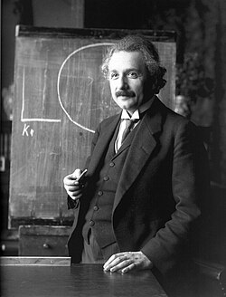

Física
Estudio de los fenómenos naturales y de las leyes que permiten comprender el comportamiento del universo.
Ciencia, matemáticas, tecnología y educación
Me interesa profundamente el estudio de los fenómenos físicos y su aplicación en la tecnología.

Estudio de los fenómenos naturales y de las leyes que permiten comprender el comportamiento del universo.
Interés por el cálculo, las ecuaciones y la resolución de problemas científicos.
Aplicación de herramientas tecnológicas en la educación y en la resolución de problemas.
Video relacionado con el área de la física.
Interés por el análisis y estudio de fenómenos científicos mediante herramientas matemáticas.
Interés por la enseñanza y formación de nuevos profesionales.